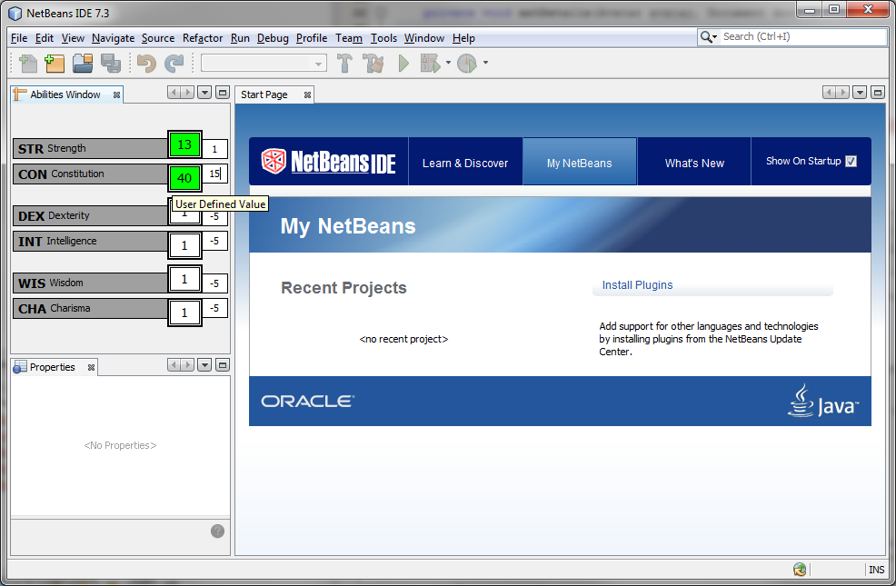

Welcome to Backpack.
This project has been in many iterative cycles. Mostly in trying to find the best codebase or architecture that would allow for easy expansion.
Here is an initial screen shot of the first 'window' or component. From what is being displayed, all twelve (12) fields are calculated. The fields that you see highlighted in green (later to be a user preference) are fields that the user has supplied their own values. When any field looses focus, if the value shown is different than that of the calculated value, it's new value is that which the user has entered. Furthermore, if there are any properties that are observing a particular field, they will also be updated to take into account the new value in there respective calculations.For example, you see that the Strength Score is 13. This value was supplied by the user. Once he transferred his focus to the Constitution score, the Strength score property ran it's comparison, found that the user has supplied a different value, and updated it's own value. This triggered a different property, Strength modifier, that was observing the Strength score to update it's calculated value.
The reason that this becomes so powerful, is that once the base architecture is layed out and you have a complete structure of properties with modifiers that are observing other properties, any change that affects a property will have an update chain that ripples through all observing properties.
Imagine if you will, your playing along and a party member casts a spell that increases everyone's Strength score by 2 (or whatever the spells calculation is). Your character, if he/she is in range or eligible for the bonus will automatically have a modifier added to their Strength score. This would cause a calculated update only if the property does not have a user supplied value. But don't worry about 'missing' the buff. The modifier is already added in. This brings me to the last part of the window.
Lastly, if you were to no longer want to use your supplied value, you can easily right click on the highlighted field and choose 'Clear User Value'. This will revert the property to using the calculated value. As you would expect, if there are any observing properties, their values (if not user defined) will be recalculated.
This automatic page generator is the easiest way to create beautiful pages for all of your projects. Author your page content here using GitHub Flavored Markdown, select a template crafted by a designer, and publish. After your page is generated, you can check out the new branch:
$ cd your_repo_root/repo_name
$ git fetch origin
$ git checkout gh-pages
In addition to supporting regular HTML content, GitHub Pages support Jekyll, a simple, blog aware static site generator written by our own Tom Preston-Werner. Jekyll makes it easy to create site-wide headers and footers without having to copy them across every page. It also offers intelligent blog support and other advanced templating features.
You can @mention a GitHub username to generate a link to their profile. The resulting <a> element will link to the contributor's GitHub Profile. For example: In 2007, Chris Wanstrath (@defunkt), PJ Hyett (@pjhyett), and Tom Preston-Werner (@mojombo) founded GitHub.
Support or Contact
Having trouble with Pages? Check out the documentation at http://help.github.com/pages or contact support@github.com and we’ll help you sort it out.